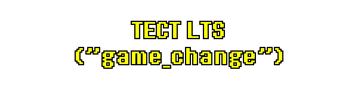
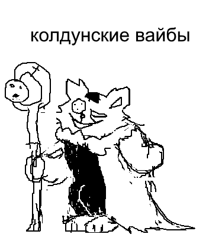

|
Холодно. |
Снег застелил землю. |
В таком состоянии, трудно понять где найти что-либо… |
Давайте начнём с того, что посмотрим вверх. |
|


Высоко-высоко было голубое небо... |
Внезапно, над вами появилась тень. |
... |
|
Э-Эй! Ты за мной следишь или что!? |
Эй, если ты хочешь следить за мной, следи в местах, похожих на бабочку. |
(Существо улетело...) |
Кажется оно произносится "Блюски". |
Вот, я испытал воды, почву и небеса. Я сделал несколько постов про курочку, которая чем то напоминает карабкающуюся собаку. Я даже сделал песню про коврик. |
|
В случае если Блюски полетит, я загрузил все посты сюда для потомков. Таким образом вам даже не придётся запоминать название сайта. |
|


 |
|
После четырёх месяцев ожидания стабильной версии, мы смогли улучшить GameMaker, и провести публичный тест новой переключающей главы команды, "game_change()". |
Были небольшие нюансы, которые нужно было отшлифовать, но в целом, кажется, всё работало нормально! |
Однако, как побочный эффект обновления GameMaker, множество других изменений в базовом движке вызвали появлениение неожиданных проблем по всей игре, включая новые сбои и даже возвращение некоторых старых багов, которые были исправлены давным-давно. Мы старались исправить всё, что могли, но сложно сказать, удалось ли нам устранить всё... |
А в будущем, после того как главы 3 и 4 выйдут, нам придётся обновить версию GameMaker ещё раз, даже глобальнее... результируя новыми и неизвестными багами, сбоями и странными изменениями в игре, количество которых станет вдвое больше чем сейчас. |
Я надеюсь это освещает какой-нибудь интересный аспект создания игр для вас ребята! |
Спасибо всем, кто учавстовал в тестах! |
|


Лежал какой-то древний кристалл, зарытый в снег.. |
|
Он точняк древний. Ему может быть до двух месяцев! |
Кристалл резонирует с сообщением. |
Дельтаруну исполнилось 6 лет.
|
... в нетерпении, вы выкапываете его...! |
|
Кажется, через время собака оттает... |
Эмм, только не используйте режим разработки. Шерсть скомкается и станет липкой. |
|


|
Игра была протестирована профессиональной командой на ПК. |
Это так странно... единственные из тех, кто поиграл в игру... это просто несколько талантливых и надёжных ребят в какой-то комнате... интересно, понравилось ли им.... |
... |
Пойду спрошу понравилось ли им. |
... |
... Они ответили! Вкратце... |
Это была трудоемкая работа, пытаться протестировать все тонкие детали и различия в тексте игры...
|
Кажется, справедливо. Есть длинный участок, где нельзя сохраняться, но, ходят слухи, что он веселый... (нёйо-ё, нёйо-ё) (пес перебирает реалестичными человеческими большими пальцами) |
Вот что говорят отзывы на данный момент. (нёйо-ё, нёйо-ё) (пес перебирает реалестичными человеческими большими пальцами) |
Кстати, несколько отчетов от команды тестировщиков касались вещей, которые казались багами, но на самом деле были преднамеренными… |
|
Третья глава достаточно стабильна! Остались только штуки связанные с консолью. |


|
Первая версия Японского перевода Главы 4 была добавлена в игру! |
Вот немного текстов, если что - перевод ещё в процессе. (Нужно еще пару месяцев, на завершение и проверку перевода) |
|
|
Когда перевод будет близиться к завершению, мы начнём тестирование на ПК. После этого мы проведем тест на консолях для Глав 3 и 4. |
|


|
Есть просвет, где немного подтаял лёд... |
Некоторые члены команды были вынуждены на некоторое время сосредоточиться на исправлении багов в 1, 2 и 3 главах, но недавний найм позволил работать над пятой главой в это время, так что прогресс разработки продолжается! |
Темп создания сейчас довольно решительный! Множество штук находятся в разработке одновременно! |
|


В пятницу ноября, небо потемнело. Вскоре после этого, предметы приняли мультяшную форму. |
|
Есть много вещей, на которые ты можешь посмотреть, но я расскажу о двух конкретных откровениях. |
Это как длинная маска, которую можно надеть, растянув её на своей коже. Вы станете похожи на кого-то, кто крепко с вами связан. |
|
[$REPLACE-UNAME$]. |
Их любовь станет вашей. |
А они получат вашу любовь. |
Фангеймер возжелал еще одну плюшку. Мне сказали, что многие хотят плюшку в виде Сима. |
|
Сомневаюсь, что сам Сим поверил бы в это... В любом случае, я сообразил его внешний вид. |
 |
Я дал ему посох, которым он может кастовать магию. Пылистую магию, мерцающую как разбитые мечты. |
Наверное, стоит подтвердить канон, что у него нет хвоста. Стоит ли ему дать большой пушистый хвост? Или, может, он оторван чьими то любящими и жестокими лапками. ... ну, вероятно, хвост, что нарисовался в твоем воображении, лучше любого, что я сумею показать. Не унывай. |
|


Мы с Камелией заколлабились для новой песней для ритм-игры от Сеги, Chunithm! |
|
Эта песня называется Theatore Creatore. В каждой песне игры есть уникальный персонаж, который с ней связан. В этом случае речь идет о театральном мастере, который на самом деле является Богом Хаоса. (Это была их идея.) |
Как и обычно в наших коллаборациях, я создал некоторые мелодии, а затем Камелия сделала всю тяжёлую работу. |
В качестве ориентира для того, какую песню делать, Sega прислали мне пример! Пример был... |
The World Revolving... |
... чел(ы)... |
Ну, надеюсь песня вам зайдет! |
|
![Listen to Toby Fox & Camellia - Theatore Creatore [From CHUNITHM]](https://email-files.fangamer.com/list_48/campaign_10/song-thumb-u5aplAAT0Wq7sEiE.png)

На Хэллоуин 2024 года мы анонсировали... |
|
Что Главы 3 и 4 выйдут в 2025 году. |
|
Так и будет 100000000000%. |
|
Мы также работаем над другими захватывающими проектами, о которых пока не можем говорить. |
|
На их запуск уйдёт довольно много времени, но 2025, похоже, будет интересным годом...! |
|
|
Вернуться в Архив |